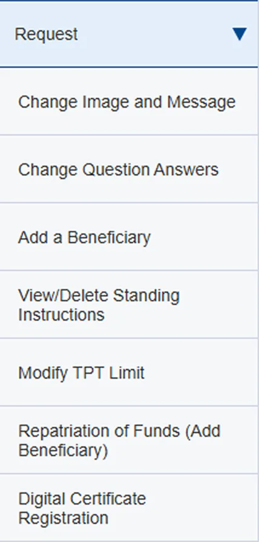
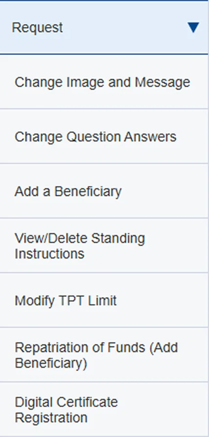
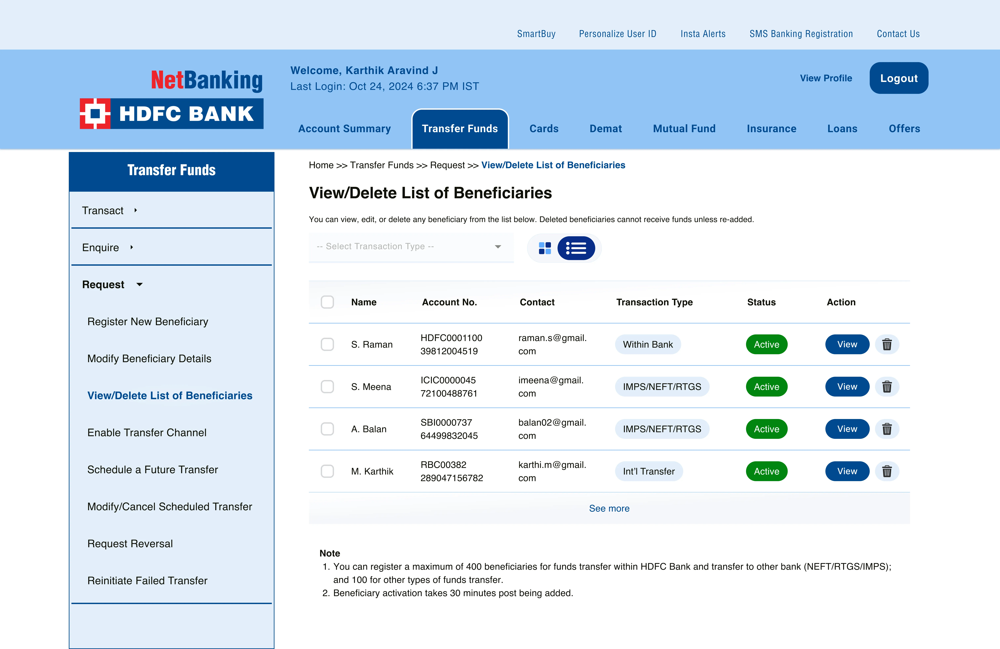
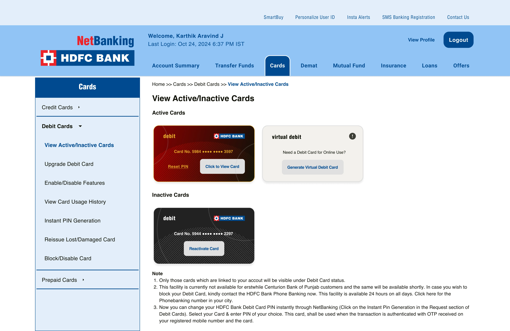
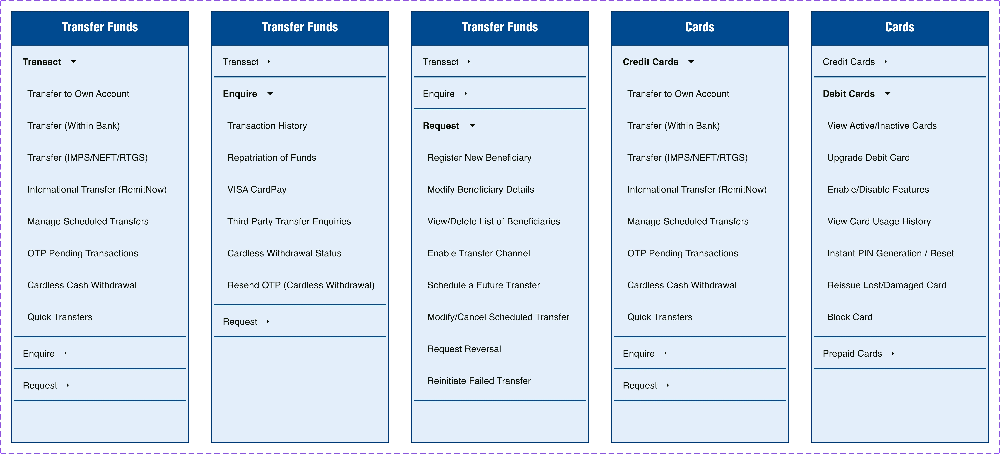
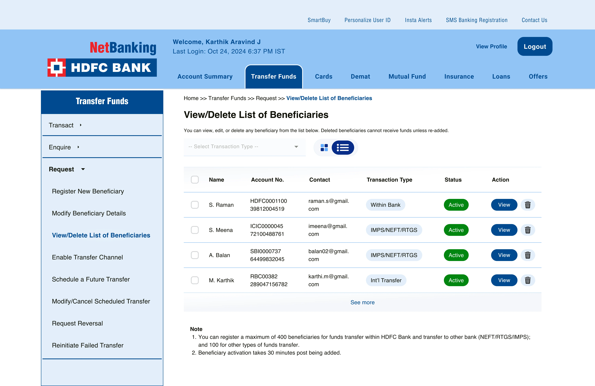
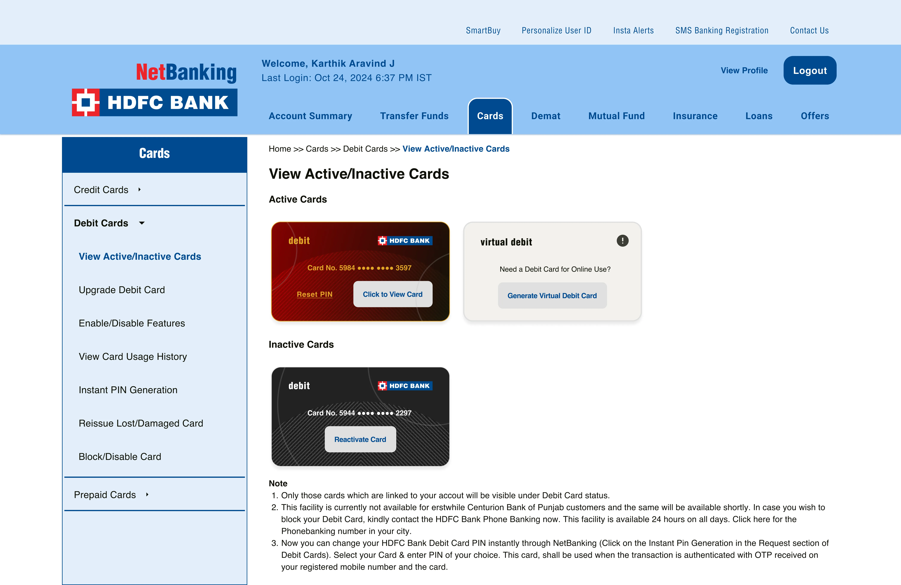
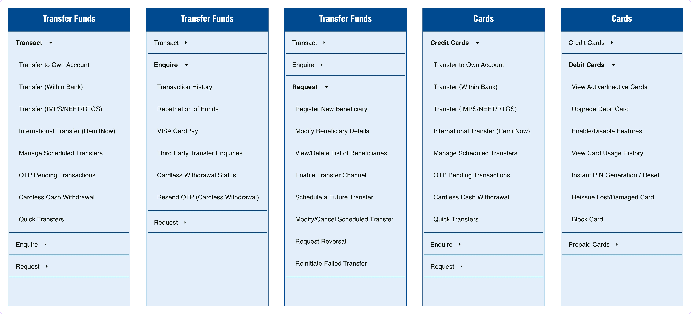

Project Context
Despite mobile app growth, a majority of HDFC users still rely heavily on the legacy browser-based NetBanking platform for critical transactions. As a longstanding HDFC customer, I undertook this redesign to address significant usability gaps without altering the brand’s visual identity or UI kit, focusing instead on improving clarity.
Goals
1. Modernize a legacy platform while retaining established visual identity
2. Reduce navigation friction in critical high‑frequency flows
3. Improve information architecture for discoverability and speed
4. Respect legacy content & technical constraints
UX Research
Objective
To understand what specifically frustrates users about the current HDFC NetBanking experience; Does this friction stem from UI design, structure, or content hierarchy?
Methodology
I conducted a heuristic audit of the current NetBanking interface and common tasks, focusing on:
Speed-running tasks
Feature discovery tasks
UI errors and Affordances
User Perception of visual elements
I also reviewed customer feedback from app stores and online forums to understand pain points from real users.
Design Touchpoints & Decisions
Research & Heuristic Audit
| Issue Area | Finding | Redesign Solution |
|---|---|---|
| Transaction Overview | Dense, flat table UI difficult to scan quickly | Replaced with a visual card layout surfacing key info (balances, due dates) with on-demand detail access |
| Beneficiaries Table | Confusing filter functionality; reused transaction card template; refreshes table on CTA action | Replaced with dropdown-based streamlined table simplifying search and filtering; more standard list pattern |
| Beneficiaries Navigation | “View/Delete Beneficiaries” buried under non-intuitive “Enquire” tab | Regrouped beneficiary actions into intuitive “Requests” tab improving menu clarity and findability |
Security Constraints in Beneficiary Management
In Indian banking, adding a new beneficiary is not instant. When a user adds a beneficiary, even during a transfer, they must:
1. Authenticate the action using a One‑Time Password (OTP) sent to the registered mobile/email.
2. Wait for a cooling period (usually 30 minutes to several hours, depending on transaction type and account profile) before transactions to that beneficiary are enabled.
This affects urgency: Users needing to make an immediate transfer must already have the beneficiary active in their list.
Therefore, we need to:
1. Clearly label beneficiaries in Active or Pending Activation state.
2. Show time remaining until activation to set expectations.
3. Make the verification flow intuitive so users don’t start a transfer that will fail due to pending activation.
Existing Screens

 

User Journey & High Fidelity Design
Focus: Verifying Beneficiary Existence Before Transfer
| Step | User Action | System Response | Why It Matters |
|---|---|---|---|
| 0 | Arrives at Account Summary | Overview of accounts | User starts at a familiar hub. |
| 1 | Clicks “Transfer Funds” (main menu) | Opens Transfers screen | Logical entry point for both transfers & related management. |
| 2 | Clicks “Requests” (sidebar) | Opens requests submenu | Beneficiary actions are logically grouped here. |
| 3 | Selects “View/Delete Beneficiaries” | Shows beneficiary list with activation status | Clear visibility into beneficiary readiness. |
| 4 | If beneficiary is Active → goes to transfer; If Pending → messaging explains wait time | User informed before finalizing | Prevents frustration from failed transfer attempts. |
This journey highlights the importance of enabling users to confirm if a beneficiary is saved before sending money; a common source of friction in banking UX.
Step 0: Arrives at Home (Account Summary).

Step 1: Clicks Transfer Funds in main menu.

Step 2: Clicks Requests in sidebar.

Step 3: Selects View/Delete Beneficiaries.

Step 4: If beneficiary is saved, either Views Beneficiary or goes back to Transact and initiates a transfer.

High Fidelity Screens
 





What I Learned
The goal of this redesign was to modernize a legacy netbanking experience without discarding its visual identity or disrupting long-time users. Designing within legacy, regulated fintech constraints reinforced the value of small, intentional UX changes over unnecessary overhauls. Addressing IA clarity, surfacing system status, and aligning flows with security realities delivers substantial user value without heavy engineering work.
Key Takeaway: UX builds trust
You don’t need a full visual redesign to solve deep usability challenges. By carefully restructuring the platform’s information architecture and streamlining complex navigation flows, like beneficiary management with activation status, you can create a clearer, more predictable user experience.